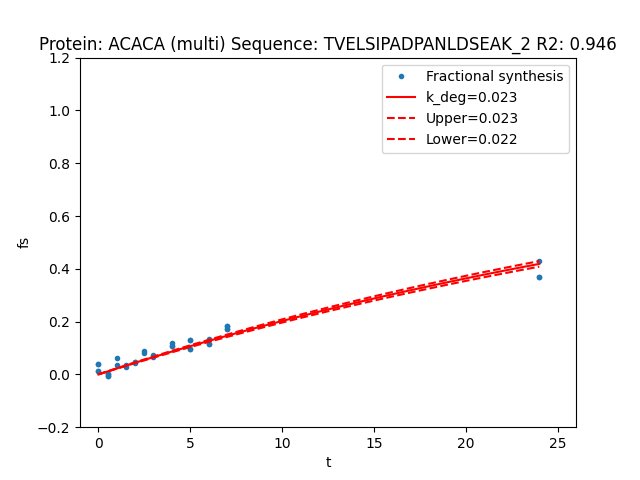

Quick Start
Installing RIANA
Install Python 3.7+ and pip. See instructions on Python website for specific instructions for your operating system.
Riana can be installed from PyPI via pip or directly from GitHub. We recommend using a virtual environment.
$ pip install rianaLaunch riana as a module (Usage/Help):
$ python -m rianaAlternatively as a console entry point:
$ rianaTo test that the installation can load test data files in tests/data:
$ pip install tox
$ toxTo run the Riana test dataset (a single fraction bovine serum albumin file from a Q-Exactive) and write the results to a specified out/test/ directory
$ python -m riana integrate tests/data/sample1/ tests/data/sample1/percolator.target.psms.txt -q 0.1 -i 0,1,2,3,4,5 -o out/test/Processing Datasets
Via Snakemake
RIANA comes with a Snakemake pipeline which is the recommended way to run RIANA. To configure, edit the provided config_template.yaml to specify the location of Comet and Percolator executables. Then run Snakemake with the provided Snakefile, e.g.,:
$ snakemake -c -s ./Snakefile -d out/snakemake_test --configfile ./config_template.yamlRefer to Snakemake documentations for details on configuring snake files.
Note that the provided Snakefile settings do not automatically output plotted curves or pre-integration intensity files by default. To output these files, edit the Snakefile to add -w and p to the shell commands under the integrate and fit rules, respectively.
Below is the config_template.yaml:
# Config
# Data location. Add as many lines as needed, sample names should be named after
# labeling time points (e.g., time12 for 12 days/12 hours of experiment)
data:
time0: /path/to/time0/folder
time1: /path/to/time1/folder
time3: /path/to/time3/folder
time6: /path/to/time6/folder
# Paths to the comet executable, the comet params file, the database, and the percolator executable
# The Snakefile assumes riana can be executed in the shell by riana
paths:
comet: /path/to/comet_source_2020013/comet.exe
comet_params: /path/to/params/comet.params
fasta: /path/tp/database.fas
percolator: /path/to/percolator
# Integration and fitting parameters
params:
model: simple # fitting model (simple, guan, fornasiero)
label_type: hw # labeling type (aa or hw)
isotopomers: 0,1,2,3,4,5 # isotopomer to integrate (0,1,2,3,4,5 for deuterium; 0,6 for heavy aa)
mass_tol: 15 # mass tolerance in ppm for integration (e.g., 25)
ria_max: 1 # final precursor ria
kp: 10 # guan model parameter (kp) or fornasiero model parameter (b)
kr: 0.15 # fornasiero model parameter (a)
rp: 5.52 # fornasiero model parameter (r)
depth: 1 # minimum number of data points
aa: K # which amino acid carries heavy label; only relevant if label_type is aa
mass_defect: D # which isotope mass defect to use (D, C13, SILAC)
# Number of threads
threads:
comet: 8
riana: 4
fitcurve: 12Manual Runs
Alternatively, RIANA can be directly called from command line given the paths to the folder of the mzML files and the Search/Percolator results. To run the turnover analysis pipeline manually, prepare the following expected input files:
RIANA was tested on the percolator output file from Crux Tide/Percolator or standalone Comet/Percolator.
The following workflow has been tested for both amino acid and heavy water labeling data gathered on a Q-Exactive instrument:
Convert raw files to mzML, using pwiz 3.0 msconvert in command line, with the following option:
--filter "peakPicking vendor"
Download the latest Crux distribution
Run Tide index with the following options:
--digestion partial-digest--missed-cleavages
Run Tide search for each experimental time point separately with the following options:
--isotope-error 1,2(for HW) or6,12(for AA)--compute-sp T--mz-bin-width 0.02--mz-bin-offset 0.0--precursor-window 20--precursor-window-type ppm
Run Percolator with the following options:
--protein T--decoy-prefix DECOY_
Run RIANA
integratefor each experimental time point separately.Run RIANA
fit
Note that the mzml_path argument should point to the directory where all mzML fractions (fraction1.mzML, fraction2.mzML, etc.) for each labeling time point are located, whereas the id_path argument should point to a percolator.target.psms.txt file from the output of searching and post-processing all the mzML files in that labeling time point together
Output
RIANA integrate outputs a {sample}_riana.txt file for each sample, which contains the Percolator output appended with additional columns, e.g., m0, m6, m12, which contains the integrated areas of each isotopomer of each peptide over a retention time range in the mass spectrometry data. The output columns depend on the isotopomer indices specified.
In addition, the {sample}_riana_intensities.txt files contain the individual intensity data of each isotopomer in each retention time point prior to integration.
RIANA fit outputs a riana_fit_peptides.csv file which contains the best-fit k, R2, and dk for each peptide-charge combination.
If the flag --plotcurves is set, RIANA additional outputs a graphical representation of each fitted curve:
